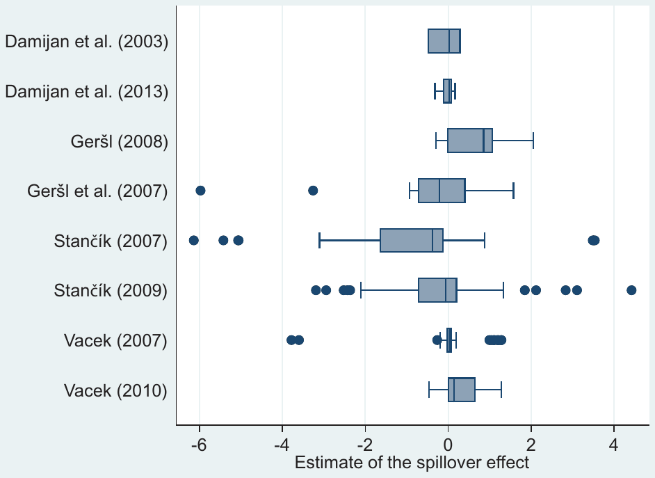
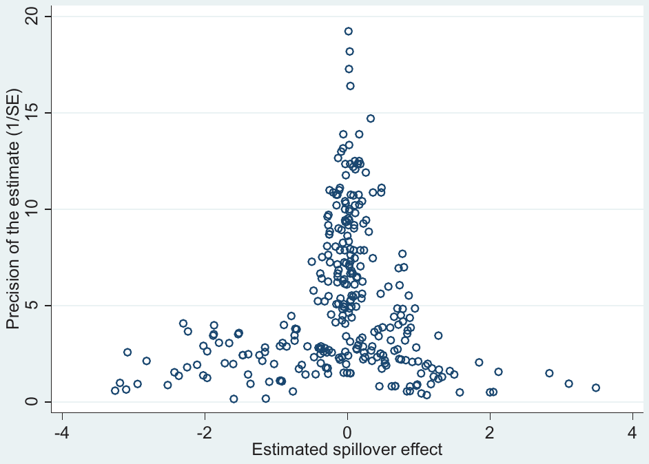
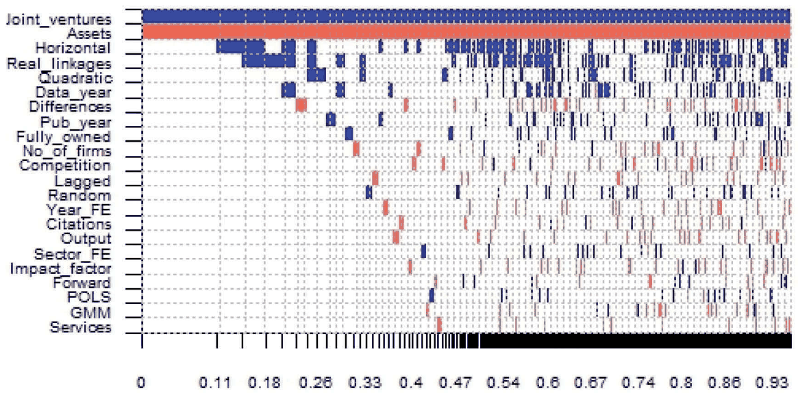
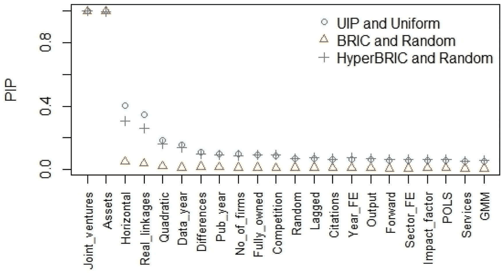

Mojmir Hampl, Tomas Havranek, and Zuzana Irsova (2020), "Foreign Capital and Domestic Productivity in the Czech Republic: A Meta-Regression Analysis." Applied Economics 52(18), 1949-1958. https://doi.org/10.1080/00036846.2020.1726864.
Mojmir Hampla,b, Tomas Havranekc and Zuzana Irsovac
aFaculty of Management and Economics, Tomas Bata University, Zlin, Czechia; bLSE Systemic Risk Center, London, UK; cFaculty of Social Sciences, Charles University, Prague, Czechia
CONTACT Tomas Havranek tomas.havranek@ies-prague.org Charles University, Prague, Czechia
Abstract
We provide a quantitative synthesis of the literature studying the effect of foreign direct investment (FDI) on the productivity of locally owned firms in the Czech Republic. To this end, we collect 332 previously reported estimates and use Bayesian model averaging to address model uncertainty. We find no evidence of publication bias, i.e. no sign of selective reporting of estimates that are statistically significant and show an intuitive sign. Our results suggest that more advanced techniques yield substantially larger positive effects (FDI spillovers). When placing more weight on estimates that solve important identification problems in the literature (such as using data on existing linkages between firms instead of approximations based on input-output tables), we find that, as of 2018, a 10-percentage-point increase in foreign presence is likely to lift the productivity of domestic firms by 11%. The effect is even larger for joint ventures, reaching 19%.
Keywords: Foreign direct investment; productivity; spillovers; meta-analysis
JEL CLASSIFICATION O12; F23; C83
I. Introduction
Many governments, especially those in emerging and transition countries, have sought to attract foreign direct investment. Foreign capital should help lift productivity in the host country in two general ways: directly (by increasing the productivity of acquired firms) and indirectly (by diffusing technology to local competitors, suppliers, and buyers). The direct effect does not constitute an externality, because foreign investors receive the profits generated by the now-more-efficient acquired company. For this reason, it cannot form a rationale for providing subsidies to foreign investors. The indirect channel of productivity enhancement, in contrast, has been frequently used in the policy debate on subsidies. Therefore, in this paper we concentrate on the indirect channel (typically called 'FDI productivity spillovers' in the literature).
FDI spillovers can arise in three scenarios. First, local competitors of foreign firms can imitate foreign technology (we call the externalities occurring in this scenario 'horizontal spillovers'). Second, local suppliers can benefit from increased pressure to raise quality and sometimes from direct inspections and quality control commissioned by foreign firms (backward spillovers). Third, local buyers of intermediate products sold by foreign firms can benefit from the increased quality of those products (forward spillovers). Both suppliers and buyers can, of course, also imitate the technology used by foreigners, although this channel is more straightforward for firms that are present in the same industry as foreign firms. More details on technology transfer related to FDI are available in a series of surveys by Havranek and Irsova (2011, 2012) and Irsova and Havranek (2013).
In this paper we provide the first systematic and quantitative synthesis of the evidence on FDI spillovers in the Czech Republic.1 We inspect the literature and find 332 estimates of horizontal, backward, and forward spillovers previously reported in various articles, papers, PhD dissertations, and reports. For each estimate, we collect variables that reflect the context in which the estimate is obtained (such as data characteristics, estimation methods, control variables, and additional aspects related to quality). Next, we investigate how the reported results are influenced by those variables. In doing so, we take into account the resulting model uncertainty by employing Bayesian model averaging (Raftery, Madigan, and Hoeting 1997). We also investigate publication bias, that is, the effect of statistical significance and the obtained sign on the probability of reporting.
Our results suggest that the mean estimates of horizontal, backward, and forward spillovers are similar and close to zero when all estimates are given the same weight. Remarkably, in contrast to most other fields of economics (Ioannidis, Doucouliagos, and Stanley 2017), we find no evidence of publication bias: all results, positive and negative, significant and insignificant, seem to have a similar probability of being reported. Nevertheless, we document that the reported results depend systematically on study design. Data and methodology matter for the published estimates of spillovers. In particular, the spillover estimates are substantially larger for more recent data and when researchers have access to detailed information on firm-to-firm linkages. The context in which firms operate matters for spillovers as well. Joint ventures of foreign and domestic firms are especially beneficial for the productivity of domestic companies: as of 2018, a 10-percentage-point increase in the incidence of joint ventures is expected to raise domestic productivity by 19%.
II. Data
Several studies have been conducted on FDI spillovers in the Czech Republic, and we use the results of these studies as our data. In this way we can provide robust conclusions and fully exploit the work of previous researchers. Unfortunately, not all the studies in the literature can be used for this purpose. We can only collect estimates that are quantitatively comparable, i.e. that answer the following question: what is the percentage increase in the productivity of domestic firms when foreign presence in connected firms increases by one percentage point? Additionally, we require that the studies also report backward or forward spillovers, not only horizontal ones (to avoid the obvious omitted variable problem). Almost all studies do indeed include backward or forward spillovers. Nevertheless, several good recent studies cannot be used for other reasons: Pavlinek and Zizalova (2016) report survey results and not numerical values on FDI spillovers, while Kosova (2010) and Ayyagari and Kosova (2010) focus on domestic firm entry and crowding out induced by foreign direct investment.
We search the Google Scholar, EconLit, and Scopus databases for potentially useful studies on FDI spillovers in the Czech Republic. After employing the aforementioned inclusion criteria, we are left with eight studies (shown in Figure 1), which nevertheless provide a wealth of data: 332 estimates of FDI spillovers under various settings. The studies were published between 2003 and 2013 and, taken together, cover tens of thousands of firms in almost all industries and service sectors of the Czech economy. Figure 1 demonstrates that the results of these studies vary widely. Differences are apparent not only across studies, but also within individual studies: every single study reports both positive and negative results, making immediate inference hard.
The summary statistics of our data set for horizontal, backward, and forward spillovers are very similar.2 For all three categories we obtain a negative mean estimate: – 0.1 in the case of horizontal spillovers, – 0.16 in the case of backward spillovers, and – 0.09 in the case of forward spillovers. For this reason, in the remainder of the paper we will analyse these spillover categories jointly. Interestingly, the median reported estimates are always larger than the mean ones, which might suggest publication bias (in particular, preferential selection of negative results). The median is – 0.06 for horizontal spillovers, 0.11 for backward spillovers, and 0.01 for forward spillovers. We turn to the problem of publication bias in the next section.

III. Publication bias
Publication bias arises when authors, editors, or referees prefer estimates that are statistically significant or display the sign dictated by the theory (Stanley 2005, 2008). For example, it has been shown repeatedly that researchers in economics tend to avoid reporting positive estimates of price elasticities. Very few researchers believe that gasoline, for example, could be a Giffen good, but they will sometimes obtain positive elasticity estimates due to noise in the data and imprecision in methodology (see, for example, Havranek, Irsova, and Janda 2012; Havranek and Kokes 2015,; Havranek, Irsova, and Zeynalova 2018c). When some estimates are selectively omitted from the literature, the mean reported estimates get biased, typically away from zero. Publication bias has been acknowledged as one of the most serious problems of current economics research, because it directly affects takeaways from the literature and thus significantly hampers efforts to pursue evidence-based policy (Ioannidis, Doucouliagos, and Stanley 2017).
In the literature on FDI spillovers, one might expect to see some selective reporting against negative and insignificant estimates. As discussed in the introduction, there are many reasons why researchers should expect to obtain positive spillover estimates; moreover, statistical significance makes it easier to 'sell' the results. But the theory is consistent with negative spillovers as well. The case is most salient for horizontal spillovers, where the entry of foreign firms immediately increases competition for domestic firms currently present in the industry. This competition hampers their returns to scale and may therefore reduce productivity. Similarly, in relation to backward spillovers, foreign firms may choose to import intermediate goods instead of purchasing them from local companies. Foreign firms may also produce intermediate goods primarily for export, thereby reducing the extent of forward spillovers.
The tool used most commonly to examine publication bias is the funnel plot. It is a scatter plot of the estimates, shown on the horizontal axis, and the precision of those estimates, shown on the vertical axis. In theory, the most precise estimates should be close to the mean underlying effect, while less precise estimates should be more dispersed. Consequently, a symmetrical inverted 'funnel' should arise in the scatter plot. The symmetry of the funnel is crucial, because it tells us something about how negative and positive estimates are treated in relation to each other. If more positive than negative estimates with the same level of precision are reported, we suspect publication bias against negative estimates, and vice versa.
The funnel plot for spillover estimates in the Czech Republic is shown in Figure 2. We can see that the funnel is remarkably symmetrical, which is rare in economics: there is no prima facie evidence of publication bias. The most precise spillover estimates are close to zero, indicating that, when no consideration is given to methodology and quality aspects of the individual estimates, there seems to be little relation between foreign presence and local productivity in the Czech Republic. (This is a result that we will challenge later.)
We can also test the symmetry of the funnel plot formally, using the funnel asymmetry test. The test involves regressing the spillover estimates on the standard errors of those estimates. Because the methods used by researchers imply that the ratio of the estimates to their standard errors has a t-distribution, there should be no statistical relation between these two quantities. Indeed, our regressions in Table 1 imply no statistically significant publication bias. First, we apply simple regression (with standard errors clustered at the study level). Second, we add study-level fixed effects. Third, we run weighted least squares with weights proportional to the precision of the individual estimates. All specifications show no evidence of selective reporting and also no evidence of a non-zero mean spillover effect. In the next section we turn to examining the importance of data, methodology, and quality aspects.
| Ordinary least squares | Fixed effects | Weighted least squares | |
|---|---|---|---|
| Standard error (bias) | −0.311 | −0.192 | −0.436 |
| (0.288) | (0.150) | (0.367) | |
| Constant (spillover effect) | 0.00187 | −0.0445 | 0.0500 |
| (0.175) | (0.0581) | (0.0721) | |
| Observations | 332 | 332 | 332 |
Note: The dependent variable is the spillover estimate. Standard errors, clustered at the study level, are reported in parentheses. The weight in the weighted least squares is the precision of the estimates reported in primary studies. p* < 0.10, ** p < 0.05, *** p < 0.01

IV. Heterogeneity
So far we have ignored the fact that the studies in our sample differ in more aspects than just precision. These aspects may well affect the reported results, and one may want to place more weight on estimates conducted according to what is considered the best-practice methodology in the literature. A simple mean is simply not enough. All the studies we examine avoid the most common problems in the literature on FDI spillovers, such as using cross-sectional data (and thus not being able to control for unobservable firm-level characteristics) or aggregated data (which gives rise to many problems in addition to the one mentioned in the previous parenthesis). But still, the remaining differences are substantial and we will attempt to control for them.
We will regress the spillover estimates on variables that reflect study design in several ways: choice of data, choice of methodology, and general quality aspects. First, to see whether there are systematic differences in the extent of horizontal, backward, and forward spillovers for the Czech Republic, we include the corresponding dummy variables. We also include a dummy variable that equals one if the study uses a lagged variable for spillovers, that is, if the study assumes that it takes time for spillovers to materialize. Next, we control for the fact that some studies assume a quadratic relation between foreign presence and domestic productivity (but note that we always re-compute the reported coefficients so that they represent a linear effect evaluated at the sample mean; otherwise the estimates would not be comparable).
Some studies report specifications estimated in differences, and we control for this aspect of study design. We also account for the number of firms used in each study. We include dummy variables that equal one if year fixed effects and sector fixed effects are included in the estimation. The variable Competition reflects whether or not the study controls for industry competition. Some papers study the effect of greenfield investment (or full acquisition of existing plants), while others examine joint ventures; we are also interested in whether spillovers vary for these types of foreign investment. Some estimates are computed for manufacturing and some for service sectors, which we also take into consideration.
An important issue in the literature is how to measure the linkages between domestic and foreign firms. Researchers typically compute industry-level measures that use input-output tables and the share of foreign presence in individual industries (in terms of assets or output). In an important contribution, Vacek (2010) criticizes this approach and collects a unique data set that reflects the real linkages between individual Czech and foreign firms. We will investigate whether this method yields systematically larger spillover estimates. An important issue is the econometric technique used to estimate spillovers; many studies use fixed effects, while several others use the general method of moments (GMM), pooled ordinary least squares, or random effects. We include corresponding dummy variables for these choices of methodology. Finally, to reflect quality aspects potentially not captured by all the data and method variables above, we include the recursive RePEc impact factor of the outlet in which the study was published and also the number of citations in Google Scholar that the paper receives per year.
The results of regressing the spillover estimates on all the variables introduced in this section are shown in Table 2. The table presents two models (note that in all models we cluster the standard errors at the level of individual studies, because we suspect that estimates reported within individual studies are not independent). In the first model we simply add all the variables and estimate one regression. Next, we follow the common general-to-specific approach and exclude the variables that are jointly insignificant at the 5% level. We are left with the specific model in the right-hand part of the table. Our results suggest that about half of the variables are important for explaining why the spillover estimates vary so much.
| General model | Specific model | |||
|---|---|---|---|---|
| Forward | 0.0773 | (0.401) | ||
| Horizontal | 0.286 | (0.311) | ||
| Lagged | −0.0534 | (0.0351) | ||
| Quadratic | 0.390 | (0.280) | 0.565** | (0.183) |
| Differences | 0.0117 | (0.0847) | ||
| No. of firms | 0.0930 | (0.0801) | ||
| Data year | 0.150*** | (0.0184) | 0.135*** | (0.0190) |
| Year FE | −0.278*** | (0.0713) | −0.333*** | (0.0237) |
| Sector FE | 0.0136 | (0.0650) | ||
| Competition | −0.360 | (0.363) | −0.573*** | (0.0530) |
| Fully owned | 0.601 | (0.439) | ||
| Joint ventures | 1.282** | (0.439) | 0.733*** | (0.0364) |
| Services | 0.0143 | (0.208) | ||
| Assets | −0.466** | (0.169) | −0.463*** | (0.0542) |
| Output | −0.162 | (0.106) | −0.188*** | (0.0503) |
| POLS | 0.156* | (0.0672) | 0.205*** | (0.00675) |
| Random | 0.0585 | (0.0561) | 0.0909*** | (0.0258) |
| GMM | −0.0951** | (0.0303) | −0.0765** | (0.0307) |
| Real linkages | 1.097** | (0.428) | 0.353*** | (0.0237) |
| Impact factor | −3.035 | (2.975) | ||
| Citations | 0.0471 | (0.0406) | ||
| Pub. year | −0.127 | (0.0840) | ||
| Constant | −0.704 | (0.774) | −0.202** | (0.0832) |
| Observations | 332 | 332 |
Note: The dependent variable is the spillover estimate. Standard errors, clustered at the study level, are reported in parentheses. The specific model is achieved by discarding variables that are jointly insignificant at the 5% level. FE = fixed effects. POLS = pooled ordinary least squares. GMM = general method of moments. p* < 0.10, ** p < 0.05, *** p < 0.01.
We find that, ceteris paribus, studies assuming a quadratic relationship between foreign presence and domestic productivity tend to find larger spillovers. An important finding is that spillovers increase with the year of the data: newer data sets are associated with larger spillovers. The inclusion of year fixed effects and controlling for industry competition reduces the reported spillover estimates in individual studies. Joint ventures of foreign and domestic companies generate much larger positive spillovers than companies fully owned by foreign investors. It also matters how the linkages are computed: when real individual linkages are available, the reported spillovers are substantially larger than when industry-level constructs are used. Different econometric techniques yield statistically significantly different results, but the difference of about 0.1 is small in economic terms. Study citations and the impact factor of the outlet are not important for the reported spillover effects.
We can use the results of the specific model to compute the mean spillover estimate conditional on the best practice applied in the literature. In other words, we use all the estimates, but place more weight on the ones that use the preferred approach. This can be achieved simply by constructing fitted values from the regression and choosing the preferred values of the variables. We prefer linear spillover estimates (preferring the quadratic method would imply even larger effects) and control for year fixed effects and competition measures. For the year of the data, we plug in 2018 in order to estimate current effects — assuming the trend that we see in the literature has continued to this day. We prefer data on real linkages and the GMM technique.
The resulting spillover estimate is 1.1 on average and 1.9 when we only consider joint ventures. Both these estimates are statistically significant at the 1% level. In economic terms, the effect is large: a more than one-to-one relation between foreign presence and domestic productivity. Few countries have been found in the literature to show such strong FDI spillovers.
V. Bayesian model averaging
In this section we present an important robustness check that takes into account the model uncertainty inherent in meta-analysis. We are never sure ex ante which of the many potential variables that may explain heterogeneity in the reported estimates should really be included in the best meta-analysis model. In the previous section we chose a simple way of dealing with model uncertainty: we estimated the model that included all the variables and then excluded those that were jointly insignificant at the 5% level. This approach is sometimes referred to as 'general to specific' modelling. Nevertheless, obviously there are many possible models (with different combinations of all the potential variables) that we did not explore. Such an exploration can be achieved using Bayesian model averaging in a consistent manner.
Bayesian model averaging was designed specifically to tackle model uncertainty (Raftery, Madigan, and Hoeting 1997). The essence of the technique is to estimate all the possible models containing different combinations of explanatory variables and then weight them based on how well they fit the data (which is captured by a statistic called the posterior model probability). Because in our case there are too many model combinations for us to compute explicitly, we use the Model Composition Markov Chain Monte Carlo algorithm, which walks through the models with the highest posterior probabilities, thus reducing the number of models that need to be estimated. To ensure good convergence, we use one million iterations and 500,000 burn-ins. Each variable is then assigned a posterior inclusion probability (PIP), which can be thought of as the Bayesian analogy of statistical significance and is computed as the sum of the posterior model probabilities for the models in which the variable is included. Bayesian model averaging has recently been used in meta-analysis, for example, by Havranek, Herman, and Irsova (2018a), Havranek, Irsova, and Vlach (2018b), Havranek and Irsova (2017), Havranek, Rusnak, and Sokolova (2017), Zigraiova and Havranek (2016), Havranek et al. (2015), and Valickova, Havranek, and Horvath (2015).
The results are shown graphically in Figure 3 and numerically in Table 3. Models are sorted in the figure from left to right according to posterior model probability (depicted on the horizontal axis). Variables are sorted from top to bottom according to posterior inclusion probability. In consequence, the best models are shown on the left and the most useful variables at the top of the figure. We see that the very best model includes only two variables, Joint ventures and Assets, but that it cannot explain the remaining 89% of the model mass. The other important variables are Horizontal, Real linkages, Quadratic, and Data year, but for all of them the posterior inclusion probabilities fall short of 50%.

| PIP | Post. mean | Post. std. dev. | |
|---|---|---|---|
| Forward | 0.053 | 0.001 | 0.024 |
| Horizontal | 0.402 | 0.094 | 0.133 |
| Lagged | 0.065 | −0.005 | 0.032 |
| Quadratic | 0.178 | 0.072 | 0.191 |
| Differences | 0.104 | −0.016 | 0.063 |
| No. of firms | 0.089 | −0.003 | 0.021 |
| Data year | 0.144 | 0.011 | 0.035 |
| Year FE | 0.061 | −0.010 | 0.067 |
| Sector FE | 0.053 | 0.004 | 0.041 |
| Competition | 0.081 | −0.018 | 0.100 |
| Fully owned | 0.090 | 0.016 | 0.068 |
| Joint ventures | 1.000 | 0.785 | 0.142 |
| Services | 0.046 | 0.000 | 0.055 |
| Assets | 1.000 | −0.821 | 0.147 |
| Output | 0.055 | −0.004 | 0.033 |
| POLS | 0.051 | 0.002 | 0.042 |
| Random | 0.061 | 0.011 | 0.071 |
| GMM | 0.047 | −0.001 | 0.049 |
| Real linkages | 0.344 | 0.109 | 0.179 |
| Impact factor | 0.053 | −0.023 | 0.246 |
| Citations | 0.055 | 0.000 | 0.003 |
| Pub. year | 0.094 | 0.003 | 0.015 |
As with other Bayesian approaches, Bayesian model averaging may be sensitive to the choice of priors. In particular, one has to choose priors for regression parameters3 and model size. In the results reported so far, we have used the unit information prior and uniform model prior, which tend to work well in predictive exercises. Nevertheless, other researchers might prefer different priors. As another robustness check, we employ two different sets of priors (see, for example, Feldkircher and Zeugner 2012, for a discussion of these priors). Figure 4 shows how the posterior inclusion probabilities change when different priors are used. Changes are apparent, but the relative importance of the individual variables is unchanged. Importantly, if we repeat the best-practice exercise from the last section for each of the three prior settings, in all cases we get an implied spillover of about 1, consistent with our main results.

VI. Concluding remarks
We present the first quantitative review of the available evidence on the effect of foreign investment on the productivity of domestic firms in the Czech Republic. We focus on indirect effects – the ‘productivity spillovers’ from foreign direct investment. Our analysis uses 332 previously reported estimates of horizontal spillovers (linkages between firms in the same industry), backward spillovers (linkages between local suppliers and foreign buyers), and forward spillovers (linkages between local buyers and foreign suppliers). We find no significant differences between these three types of spillovers. On average, the reported spillovers seem to be zero, even after controlling for potential publication selection bias.
Nevertheless, we document how the mean estimate taken from the available papers is a misleading statistic for evaluating the contribution of the literature on FDI spillovers in the Czech Republic. Not all estimates were created equal, and not all are treated as such by researchers in this literature. In particular, we find that the reported spillover effects increase with newer data, which is encouraging. Next, a proper estimation specification which includes year fixed effects and controls for sectoral competition results in smaller spillover estimates. This effect, however, is more than offset by the positive influence of using data on real linkages between firms to construct the relevant spillover variables, as in Vacek (2010). Spillovers also vary according to the context in which foreign investors operate in the economy: the spillovers generated are much larger for joint ventures of foreign and local firms than for fully foreign-owned firms. This allows us to construct mean estimates conditional on best-practice methodology and for different contexts in which firms operate.
Using these findings (which are also robust to the model uncertainty problem because we deploy Bayesian model averaging), we compute the spillover value implied by the best practice methodology in the literature for the year 2018. The result is 1.1 overall, implying that a 10-percentage-point increase in foreign presence increases domestic productivity by 11%. This is a large figure compared to studies on FDI spillovers in other countries (see Havranek and Irsova 2011; Irsova and Havranek 2013); without doubt, the effect is economically significant. Moreover, the positive effect reaches 19% when joint ventures are considered. All in all, we conclude that, based on the available empirical evidence, foreign direct investment has been strongly beneficial to the productivity of locally owned firms in the Czech Republic.
Acknowledgments
Havranek and Irsova acknowledge support from the Czech Science Foundation (project 19-26812X).
Disclosure statement
No potential conflict of interest was reported by the authors.
Funding
This work was supported by the Grantová Agentura České Republiky [19-26812X].
ENDNOTES
- Examples of well-written previous meta-analyses relevant to comparative economics include Fidrmuc and Korhonen (2006), Cuaresma, Fidrmuc, and Hake (2014), Iwasaki and Tokunaga (2016), and Iwasaki and Kočenda (2017).
- In all computations, we winsorize the estimates at the 5% level because of several outliers in the data (inherent in any meta-analysis). The winsorization does not affect our main results.
- We follow the common approach and choose the conservative prior of zero for each parameter. Note that this practice generally drives the posterior means for coefficients in Bayesian model averaging towards zero, which helps explain why almost all the estimates are now smaller in absolute value than what we saw previously with OLS. For all the variables previously identified by our specific model, however, the estimated sign remains the same.
REFERENCES
- Ayyagari, M., and R. Kosova. 2010. “Does FDI Facilitate Domestic Entry? Evidence from the Czech Republic.” Review of International Economics 18 (1): 14–29.
- Cuaresma, J. C., J. Fidrmuc, and M. Hake. 2014. “Demand and Supply Drivers of Foreign Currency Loans in CEECs: A Meta-Analysis.” Economic Systems 38 (1): 26–42.
- Damijan, J., M. Knell, B. Majcen, and M. Rojec 2003. “Technology Transfer through FDI in Top-10 Transition Countries: How Important are Direct Effects, Horizontal and Vertical Spillovers?” William Davidson Institute Working Papers Series 549. William Davidson Institute at the University of Michigan.
- Damijan, J., M. Rojec, B. Majcen, and M. Knell. 2013. “Impact of Firm Heterogeneity on Direct and Spillover Effects of FDI: Micro-Evidence from Ten Transition Countries.” Journal of Comparative Economics 41 (3): 895–922.
- Feldkircher, M., and S. Zeugner. 2012. “The Impact of Data Revisions on the Robustness of Growth Determinants – A Note on Determinants of Economic Growth: Will Data Tell?” Journal of Applied Econometrics 27 (4): 686–694.
- Fidrmuc, J., and I. Korhonen. 2006. “Meta-Analysis of the Business Cycle Correlation between the Euro Area and the CEECs.” Journal of Comparative Economics 34 (3): 518–537.
- Gersl, A. 2008. “Productivity, Export Performance, and Financing of the Czech Corporate Sector: The Effects of Foreign Direct Investment.” Czech Journal of Economics and Finance 58: 232–247.
- Gersl, A., I. Rubene, and T. Zumer (2007): “Foreign Direct Investment and Productivity Spillovers: Updated Evidence from Central and Eastern Europe.” CNB Working Papers 2007/8. Czech National Bank, Research Department.
- Havranek, T., D. Herman, and Z. Irsova. 2018a. “Does Daylight Saving Save Electricity? A Meta-Analysis.” The Energy Journal 39 (2): 35–61.
- Havranek, T., R. Horvath, Z. Irsova, and M. Rusnak. 2015. “Cross-Country Heterogeneity in Intertemporal Substitution.” Journal of International Economics 96 (1): 100–118.
- Havranek, T., and Z. Irsova. 2011. “Estimating Vertical Spillovers from FDI: Why Results Vary and What the True Effect Is.” Journal of International Economics 85 (2): 234–244.
- Havranek, T., and Z. Irsova. 2012. “Survey Article: Publication Bias in the Literature on Foreign Direct Investment Spillovers.” Journal of Development Studies 48 (10): 1375–1396.
- Havranek, T., and Z. Irsova. 2017. “Do Borders Really Slash Trade? A Meta-Analysis.” IMF Economic Review 65 (2): 365–396.
- Havranek, T., Z. Irsova, and K. Janda. 2012. “Demand for Gasoline Is More Price-Inelastic than Commonly Thought.” Energy Economics 34 (1): 201–207.
- Havranek, T., Z. Irsova, and T. Vlach. 2018b. “Measuring the Income Elasticity of Water Demand: The Importance of Publication and Endogeneity Biases.” Land Economics 94 (2): 259–283.
- Havranek, T., Z. Irsova, and O. Zeynalova. 2018c. “Tuition Fees and University Enrollment: A Meta-Regression Analysis.” Oxford Bulletin of Economics and Statistics 80 (6): 1145–1184.
- Havranek, T., and O. Kokes. 2015. “Income Elasticity of Gasoline Demand: A Meta-Analysis.” Energy Economics 47 (1): 77–86.
- Havranek, T., M. Rusnak, and A. Sokolova. 2017. “Habit Formation in Consumption: A Meta-Analysis.” European Economic Review 95 (1): 142–167.
- Ioannidis, J., C. Doucouliagos, and T. Stanley. 2017. “The Power of Bias in Economics Research.” The Economic Journal 127: F236–F265.
- Irsova, Z., and T. Havranek. 2013. “Determinants of Horizontal Spillovers from FDI: Evidence from a Large Meta-Analysis.” World Development 42 (C): 1–15.
- Iwasaki, I., and E. Kočenda. 2017. “Are Some Owners Better than Others in Czech Privatized Firms? Even Meta-Analysis Can’t Make Us Perfectly Sure.” Economic Systems 41 (4): 537–568.
- Iwasaki, I., and M. Tokunaga. 2016. “Technology Transfer and Spillovers from FDI in Transition Economies: A Meta-Analysis.” Journal of Comparative Economics 44 (4): 1086–1114.
- Kosova, R. 2010. “Do Foreign Firms Crowd Out Domestic Firms? Evidence from the Czech Republic.” Review of Economics and Statistics 92 (4): 861–881.
- Pavlinek, P., and P. Zizalova. 2016. “Linkages and Spillovers in Global Production Networks: Firm-Level Analysis of the Czech Automotive Industry.” Journal of Economic Geography 16 (2): 331–363.
- Raftery, A., D. Madigan, and J. Hoeting. 1997. “Bayesian Model Averaging for Linear Regression Models.” Journal of the American Statistical Association 92: 179–191.
- Stancik, J. 2007. “Horizontal and Vertical FDI Spillovers: Recent Evidence from the Czech Republic.” CERGE-EI Working Papers 340. Prague: Center for Economic Research and Graduate Education – Economics Institute.
- Stancik, J. 2009. “FDI Spillovers in the Czech Republic: Takeovers Vs. Greenfields.” European Economy – Economic Papers 2008–2015 369, Directorate General Economic and Financial Affairs (DG ECFIN). European Commission.
- Stanley, T. 2005. “Beyond Publication Bias.” Journal of Economic Surveys 19 (3): 309–345.
- Stanley, T. 2008. “Meta-Regression Methods for Detecting and Estimating Empirical Effects in the Presence of Publication Selection.” Oxford Bulletin of Economic and Statistics 70 (1): 103–127.
- Vacek, P. (2007): “Productivity Spillovers from Foreign Direct Investment: Industry-Level Analysis. In Essays on International Productivity Spillovers.” Ph.D. thesis, Cornell University.
- Vacek, P. (2010): “Panel Data Evidence on Productivity Spillovers from Foreign Direct Investment: Firm-Level Measures of Backward and Forward Linkages.” Institute of Economic Studies Working Papers 2010/18, Charles University Prague.
- Valickova, P., T. Havranek, and R. Horvath. 2015. “Financial Development and Economic Growth: A Meta-Analysis.” Journal of Economic Surveys 29 (3): 506–526.
- Zigraiova, D., and T. Havranek. 2016. “Bank Competition and Financial Stability: Much Ado about Nothing?” Journal of Economic Surveys 30 (5): 944–981.